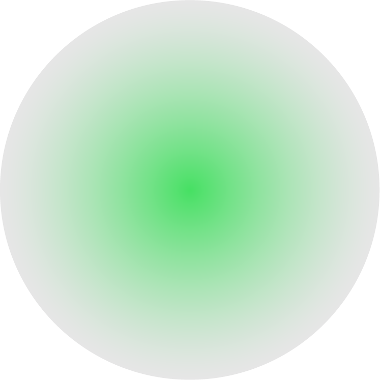

05 - ATHLETICS - {Finish Line/Winning Run/Goal}Point ; A Line Marking The End of A Race
05 - ATHLETICS - {Finish Line/Winning Run/Goal}Point ; A Line Marking The End of A Race
05 - ATHLETICS - {Finish Line/Winning Run/Goal}Point ; A Line Marking The End of A Race
{결승}점

육상·수영 등에서 승부가 결정되는 지점
승부를 결정짓는 점수
승부를 판정하기 위한 기준점을 가리킨다. 육상 경기에서 {결승}점은 트랙 안쪽에서부터 직각으로 그어진 폭 5㎝의 흰 선으로 경기자의 순위 판정을 위한 것이다. 스타트 라인에 가까운 쪽이 기준이 되므로 선의 폭은 정해진 거리의 바깥쪽이 되어야 한다. 경주자의 순위는 이 선을 포함한 연직 평면에 동체가 먼저 도달한 순위에 따라 정해진다.
{결승}점은 야구 경기에서 똑같이 무득점이거나 혹은 동점이었다가 올린, 경기를 승리로 이끄는 득점을 뜻한다.
승부를 결정짓는 점수
승부를 판정하기 위한 기준점을 가리킨다. 육상 경기에서 {결승}점은 트랙 안쪽에서부터 직각으로 그어진 폭 5㎝의 흰 선으로 경기자의 순위 판정을 위한 것이다. 스타트 라인에 가까운 쪽이 기준이 되므로 선의 폭은 정해진 거리의 바깥쪽이 되어야 한다. 경주자의 순위는 이 선을 포함한 연직 평면에 동체가 먼저 도달한 순위에 따라 정해진다.
{결승}점은 야구 경기에서 똑같이 무득점이거나 혹은 동점이었다가 올린, 경기를 승리로 이끄는 득점을 뜻한다.

1. { }점 위에 설치하는 { }테이프는 보조적 장치일 뿐 도착 순서를 결정하는 역할은 아니다.
2. 올림픽 중 코로나19에 확진되어 { } 경기를 못 뛰게 되면 은메달을 받는다.
3. 쇼트트랙 경기에서 발을 들이미는 이유는 스케이트 날 앞부분이 { }점을 통과하는 순간 골인 기록으로 인정되기 때문이다.
4. 단거리 달리기를 할 땐 { }점에 육박하면 상체를 앞으로 기울이며 달리던 속도 그대로 골인하는 것이 좋다.
5. 2002년 한국과 독일의 월드컵 준{ }전 당시 거리 응원을 하러 700만명이 모였다.